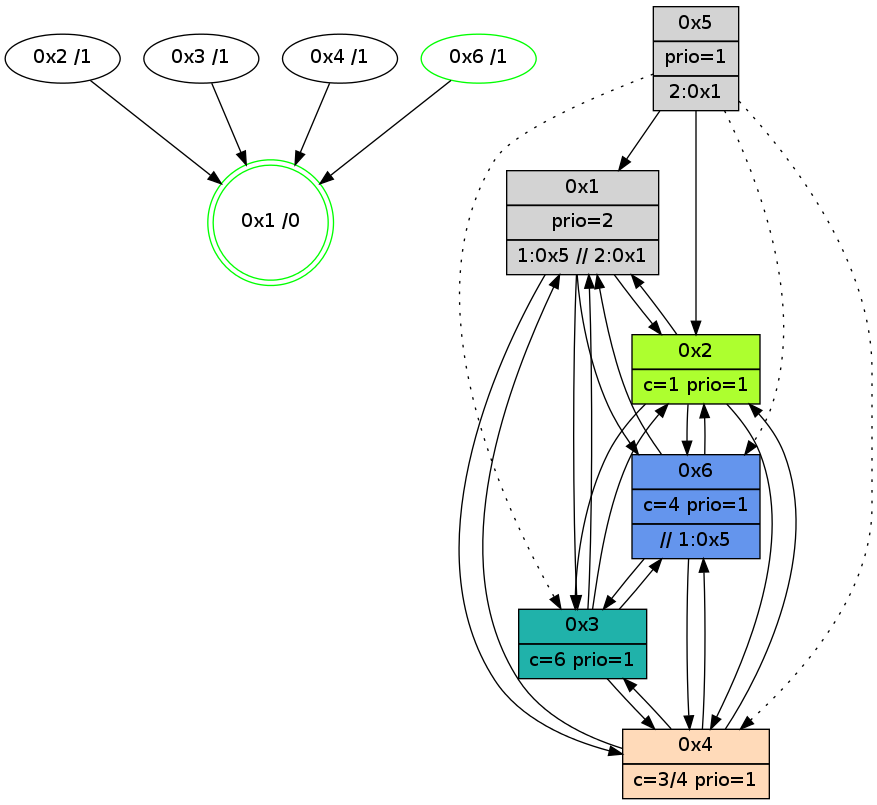

>> << IDX [start] -100 -25 -5 +0 +5 +25 +100 [870.19688201]
 Previous packets
----------------------------------------------------------------------
865.275800 beacon01(adaf) #0 coord=01,02,05,03,04,06 cycle=432.0ms assoc
-- color-indic=1 64 e1 ac
865.285761 beacon02(adaf) #0 coord=01,02,05,03,04,06 cycle=432.0ms assoc 64 b0 53
865.295762 beacon05(adaf) #0 coord=01,02,05,03,04,06 cycle=432.0ms assoc 64 16 79
865.305762 beacon03(adaf) #0 coord=01,02,05,03,04,06 cycle=432.0ms assoc 64 8a 5d
865.315762 beacon04(adaf) #0 coord=01,02,05,03,04,06 cycle=432.0ms assoc 64 2c 77
865.325762 beacon06(adaf) #0 coord=01,02,05,03,04,06 cycle=432.0ms assoc 64 58 6b
865.337451 PARSE ERROR************************
Traceback (most recent call last):
File "PacketAnalysis.py", line 167, in showOperaPacket
structPacket = OperaPacketParse.parsePacket(rawPacket)
File "../../pkg-python/HipSens/Core/OperaPacketParse.py", line 461, in parsePacket
return parseHelloMessage(data)
File "../../pkg-python/HipSens/Core/OperaPacketParse.py", line 125, in parseHelloMessage
struct.unpack("!H",linkList[:2])[0])
error: unpack requires a string argument of length 2
48 20 04 00 02 9e 00 02 02 08 02 00 01 00 06 00 03 00 53 04 00 02 00 00 4c 08 2e 8f 0b c0 01 53 3f c7 4d ba
865.339351 [Hello(1): seq=569 sym=2,4,3,6 sysInfo=hasWarning,coloring-mode-on,ColoringModeRequestCalled stat=2:3,4,1,0/4:0,0,1,0/3:0,1,0,0/6:4,2,2,2]
865.341168 [Hello(6): seq=583 sym=3,4,1,2 sysInfo=hasWarning,coloring-mode-on,ColoringModeIndicationCalled stat=3:2,3,1,0/4:0,0,2,0/1:2,11,10,1/2:10,10,2,0]
865.343833 [STC(1) #0.92 new-neigh,tree-change,inconsistent-stability,stable,to-color d=0]
----------------------------------------------------------------------
865.767908 beacon01(adaf) #0 coord=01,02,05,03,04,06 cycle=432.0ms assoc
-- color-indic=1 64 25 c3
865.777869 beacon02(adaf) #0 coord=01,02,05,03,04,06 cycle=432.0ms assoc 64 74 3c
865.787869 beacon05(adaf) #0 coord=01,02,05,03,04,06 cycle=432.0ms assoc 64 d2 16
865.797869 beacon03(adaf) #0 coord=01,02,05,03,04,06 cycle=432.0ms assoc 64 4e 32
865.807870 beacon04(adaf) #0 coord=01,02,05,03,04,06 cycle=432.0ms assoc 64 e8 18
865.817870 beacon06(adaf) #0 coord=01,02,05,03,04,06 cycle=432.0ms assoc 64 9c 04
865.829406 [STC(4)->1 #0.92 to-color d=1]
865.831522 [STC(6)->1 #0.92 new-neigh,tree-change,inconsistent-stability,stable,to-color d=1]
865.833460 [Hello(3): seq=668 sym=6,4,1,2 sysInfo=hasWarning stat=6:6,3,1,0/4:3,0,1,0/1:14,3,6,1/2:9,10,3,0]
865.835838 [Color(6) seq=96 @0:0 color=4 prio=1 c=0,1,2,5,6;3]
865.837236 [STC(3)->1 #0.92 new-neigh,tree-change,inconsistent-stability,to-color d=1]
865.843726 [Color(1) seq=96 @0:0 prio=2 c=1,4,6;0,2,3,5]
----------------------------------------------------------------------
866.260016 beacon01(adaf) #0 coord=01,02,05,03,04,06 cycle=432.0ms assoc
-- color-indic=1 64 68 c4
866.269975 beacon02(adaf) #0 coord=01,02,05,03,04,06 cycle=432.0ms assoc 64 39 3b
866.279977 beacon05(adaf) #0 coord=01,02,05,03,04,06 cycle=432.0ms assoc 64 9f 11
866.289976 beacon03(adaf) #0 coord=01,02,05,03,04,06 cycle=432.0ms assoc 64 03 35
866.299977 beacon04(adaf) #0 coord=01,02,05,03,04,06 cycle=432.0ms assoc 64 a5 1f
866.309977 beacon06(adaf) #0 coord=01,02,05,03,04,06 cycle=432.0ms assoc 64 d1 03
866.320874 [Hello(1): seq=570 sym=2,4,3,6 sysInfo=hasWarning,coloring-mode-on,ColoringModeRequestCalled stat=2:3,4,1,0/4:0,0,1,0/3:0,1,0,0/6:5,2,2,2]
866.323545 [Color(5) seq=14 @0:0 prio=1 >2.@1 c=1;0,2,3,4,5,6]
866.325323 [Hello(4): seq=671 sym=2,1,6,3 sysInfo=hasWarning stat=2:15,8,14,2/1:1,13,12,0/6:4,6,2,0/3:8,12,0,3]
866.327120 [Hello(6): seq=584 sym=3,4,1,2 sysInfo=hasWarning,coloring-mode-on,ColoringModeIndicationCalled stat=3:2,3,2,0/4:0,0,2,0/1:2,12,11,1/2:10,10,3,0]
----------------------------------------------------------------------
866.752124 beacon01(adaf) #0 coord=01,02,05,03,04,06 cycle=432.0ms assoc
-- color-indic=1 64 ac ab
866.762085 beacon02(adaf) #0 coord=01,02,05,03,04,06 cycle=432.0ms assoc 64 fd 54
866.772084 beacon05(adaf) #0 coord=01,02,05,03,04,06 cycle=432.0ms assoc 64 5b 7e
866.782086 beacon03(adaf) #0 coord=01,02,05,03,04,06 cycle=432.0ms assoc 64 c7 5a
866.792086 beacon04(adaf) #0 coord=01,02,05,03,04,06 cycle=432.0ms assoc 64 61 70
866.802085 beacon06(adaf) #0 coord=01,02,05,03,04,06 cycle=432.0ms assoc 64 15 6c
866.813774 [Hello(3): seq=669 sym=6,4,1,2 sysInfo=hasWarning stat=6:7,3,1,0/4:4,0,1,0/1:15,4,6,1/2:9,10,3,0]
866.818264 [Color(6) seq=97 @0:0 color=4 prio=1 c=0,1,2,5,6;3]
866.820363 [Color(1) seq=97 @0:0 prio=2 >1.@5 >>2.@1 c=1,4,6;0,2,3,5]
----------------------------------------------------------------------
867.244232 beacon01(adaf) #0 coord=01,02,05,03,04,06 cycle=432.0ms assoc
-- color-indic=1 64 e0 1b
867.254192 beacon02(adaf) #0 coord=01,02,05,03,04,06 cycle=432.0ms assoc 64 b1 e4
867.264193 beacon05(adaf) #0 coord=01,02,05,03,04,06 cycle=432.0ms assoc 64 17 ce
867.274193 beacon03(adaf) #0 coord=01,02,05,03,04,06 cycle=432.0ms assoc 64 8b ea
867.284193 beacon04(adaf) #0 coord=01,02,05,03,04,06 cycle=432.0ms assoc 64 2d c0
867.294194 beacon06(adaf) #0 coord=01,02,05,03,04,06 cycle=432.0ms assoc 64 59 dc
867.305883 [Hello(4): seq=672 sym=2,1,6,3 sysInfo=hasWarning stat=2:15,8,14,2/1:1,14,12,0/6:5,7,2,0/3:9,12,0,3]
867.310960 [Hello(1): seq=571 sym=2,4,3,6 sysInfo=hasWarning,coloring-mode-on,ColoringModeRequestCalled stat=2:4,4,1,0/4:0,0,1,0/3:0,1,0,0/6:6,2,2,2]
----------------------------------------------------------------------
867.736339 beacon01(adaf) #0 coord=01,02,05,03,04,06 cycle=432.0ms assoc
-- color-indic=1 64 24 74
867.746300 beacon02(adaf) #0 coord=01,02,05,03,04,06 cycle=432.0ms assoc 64 75 8b
867.756301 beacon05(adaf) #0 coord=01,02,05,03,04,06 cycle=432.0ms assoc 64 d3 a1
867.766301 beacon03(adaf) #0 coord=01,02,05,03,04,06 cycle=432.0ms assoc 64 4f 85
867.776301 beacon04(adaf) #0 coord=01,02,05,03,04,06 cycle=432.0ms assoc 64 e9 af
867.786301 beacon06(adaf) #0 coord=01,02,05,03,04,06 cycle=432.0ms assoc 64 9d b3
867.798007 [Hello(3): seq=670 sym=6,4,1,2 sysInfo=hasWarning stat=6:8,4,1,0/4:4,0,1,0/1:0,5,6,1/2:9,10,3,0]
867.802490 [Color(6) seq=98 @0:0 color=4 prio=1 >>1.@5 c=0,1,2,5,6;3]
867.806274 [STC(1) #0.93 new-neigh,tree-change,inconsistent-stability,stable,to-color d=0]
867.808227 [Color(1) seq=98 @0:0 prio=2 >1.@5 >>2.@1 c=1,4,6;0,2,3,5]
----------------------------------------------------------------------
868.228448 beacon01(adaf) #0 coord=01,02,05,03,04,06 cycle=432.0ms assoc
-- color-indic=1 64 aa 61
868.238410 beacon02(adaf) #0 coord=01,02,05,03,04,06 cycle=432.0ms assoc 64 fb 9e
868.248408 beacon05(adaf) #0 coord=01,02,05,03,04,06 cycle=432.0ms assoc 64 5d b4
868.258371 beacon03(adaf) #0 coord=01,02,05,03,04,06 cycle=432.0ms assoc 64 c1 90
868.268409 beacon04(adaf) #0 coord=01,02,05,03,04,06 cycle=432.0ms assoc 64 67 ba
868.278410 beacon06(adaf) #0 coord=01,02,05,03,04,06 cycle=432.0ms assoc 64 13 a6
868.289923 [STC(3)->1 #0.93 new-neigh,tree-change,inconsistent-stability,to-color d=1]
868.293991 [Hello(4): seq=673 sym=2,1,6,3 sysInfo=hasWarning stat=2:15,8,14,2/1:2,15,13,0/6:5,8,2,0/3:10,12,0,3]
868.295778 [Hello(6): seq=586 sym=3,4,1,2 sysInfo=hasWarning,coloring-mode-on,ColoringModeIndicationCalled stat=3:2,3,2,0/4:0,0,2,0/1:3,14,12,1/2:10,10,3,0]
868.298905 [STC(6)->1 #0.93 new-neigh,tree-change,inconsistent-stability,stable,to-color d=1]
868.302346 [Hello(1): seq=572 sym=2,4,3,6 sysInfo=hasWarning,coloring-mode-on,ColoringModeRequestCalled stat=2:4,4,1,0/4:0,0,1,0/3:0,1,0,0/6:6,2,2,2]
868.308963 [STC(4)->1 #0.93 new-neigh,tree-change,inconsistent-stability,to-color d=1]
----------------------------------------------------------------------
868.720555 beacon01(adaf) #0 coord=01,02,05,03,04,06 cycle=432.0ms assoc
-- color-indic=1 64 6e 0e
868.730516 beacon02(adaf) #0 coord=01,02,05,03,04,06 cycle=432.0ms assoc 64 3f f1
868.740516 beacon05(adaf) #0 coord=01,02,05,03,04,06 cycle=432.0ms assoc 64 99 db
868.750515 beacon03(adaf) #0 coord=01,02,05,03,04,06 cycle=432.0ms assoc 64 05 ff
868.760516 beacon04(adaf) #0 coord=01,02,05,03,04,06 cycle=432.0ms assoc 64 a3 d5
868.770517 beacon06(adaf) #0 coord=01,02,05,03,04,06 cycle=432.0ms assoc 64 d7 c9
868.782207 [Hello(3): seq=671 sym=6,4,1,2 sysInfo=hasWarning stat=6:9,5,2,0/4:4,0,2,0/1:1,6,7,1/2:9,10,3,0]
868.784182 [Color(1) seq=99 @0:0 prio=2 >1.@5 >>2.@1 c=1,4,6;0,2,3,5]
868.786713 [Color(6) seq=99 @0:0 color=4 prio=1 >>1.@5 c=0,1,2,5,6;3]
----------------------------------------------------------------------
869.212662 beacon01(adaf) #0 coord=01,02,05,03,04,06 cycle=432.0ms assoc
-- color-indic=1 64 22 be
869.222623 beacon02(adaf) #0 coord=01,02,05,03,04,06 cycle=432.0ms assoc 64 73 41
869.232624 beacon05(adaf) #0 coord=01,02,05,03,04,06 cycle=432.0ms assoc 64 d5 6b
869.242624 beacon03(adaf) #0 coord=01,02,05,03,04,06 cycle=432.0ms assoc 64 49 4f
869.252625 beacon04(adaf) #0 coord=01,02,05,03,04,06 cycle=432.0ms assoc 64 ef 65
869.262625 beacon06(adaf) #0 coord=01,02,05,03,04,06 cycle=432.0ms assoc 64 9b 79
869.274333 [Hello(4): seq=674 sym=2,1,6,3 sysInfo=hasWarning stat=2:15,8,14,2/1:2,0,13,0/6:6,9,2,0/3:11,12,0,3]
869.276202 [Hello(1): seq=573 sym=2,4,3,6 sysInfo=hasWarning,coloring-mode-on,ColoringModeRequestCalled stat=2:4,4,2,0/4:0,0,1,0/3:0,1,0,0/6:6,3,2,2]
869.278027 [Hello(6): seq=587 sym=3,4,1,2 sysInfo=hasWarning,coloring-mode-on,ColoringModeIndicationCalled stat=3:2,3,2,0/4:0,0,2,0/1:4,14,12,1/2:10,10,4,0]
----------------------------------------------------------------------
869.704773 beacon01(adaf) #0 coord=01,02,05,03,04,06 cycle=432.0ms assoc
-- color-indic=1 64 e6 d1
869.714735 beacon02(adaf) #0 coord=01,02,05,03,04,06 cycle=432.0ms assoc 64 b7 2e
869.724734 beacon05(adaf) #0 coord=01,02,05,03,04,06 cycle=432.0ms assoc 64 11 04
869.734734 beacon03(adaf) #0 coord=01,02,05,03,04,06 cycle=432.0ms assoc 64 8d 20
869.744735 beacon04(adaf) #0 coord=01,02,05,03,04,06 cycle=432.0ms assoc 64 2b 0a
869.754737 beacon06(adaf) #0 coord=01,02,05,03,04,06 cycle=432.0ms assoc 64 5f 16
869.766437 [Hello(3): seq=672 sym=6,4,1,2 sysInfo=hasWarning stat=6:10,6,2,0/4:4,0,2,0/1:2,7,7,1/2:9,10,3,0]
869.770756 [Color(1) seq=100 @0:0 prio=2 >1.@5 >>2.@1 c=1,4,6;0,2,3,5]
869.772632 [Color(6) seq=100 @0:0 color=4 prio=1 >>1.@5 c=0,1,2,5,6;3]